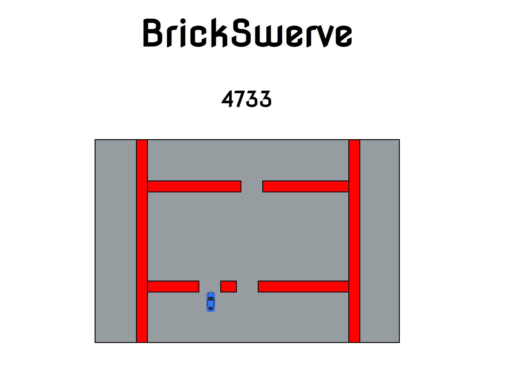

| Title/Link to Tool | Tool Description | Tool Image |
|---|---|---|
| BrickSwerve Arcade Game |
Tools used: HTML, JavaScript, CSS
This is a JavaScript arcade game that I built from scratch. The user must try to move their car to avoid oncoming obstacles for as long as possible. I created a basic video game engine to create a dynamic, interactive experience. Click the title on the left to direct to the game. |
 |
| Sleeper Fantasy Football Exposure Tool |
Tools used: HTML, JavaScript, CSS, Sleeper API, AnyChart
This is a tool for users of the popular Fantasy Sports application, Sleeper. The user can input their Sleeper username, and the tool uses the Sleeper API and AnyChart to create a bar graph of their most frequently owned players throughout all of their Fantasy Football leagues. Click the title on the left to direct to this tool. |